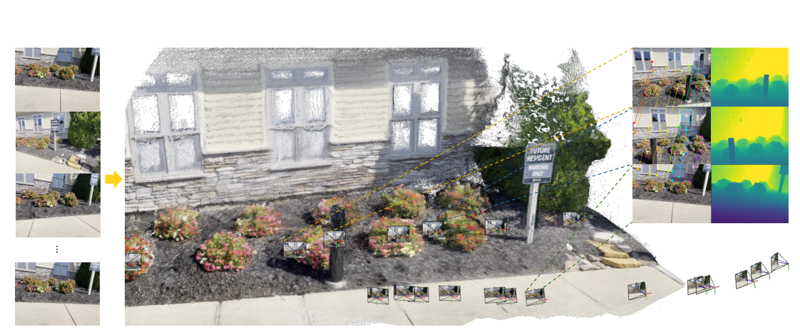
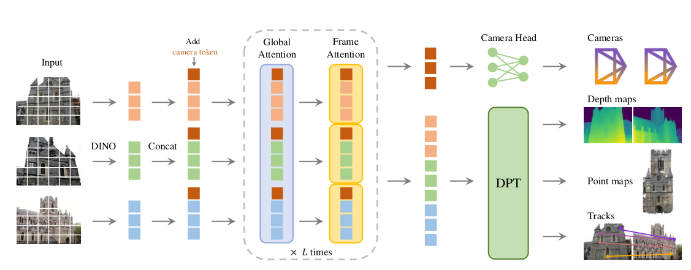
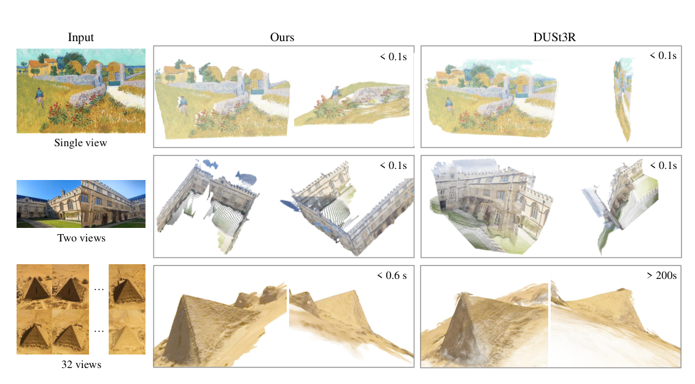

Background & Motivation
VGGT 是一個單一前饋(feed-forward)transformer:輸入 1 到數百張同場景影像,在不到一秒內一次輸出全部關鍵 3D 屬性——相機參數、深度圖、point map、3D 點軌跡。它幾乎不需任何幾何後處理,卻常勝過需要昂貴迭代優化(Bundle Adjustment、global alignment)的方法。
VGGT is a single feed-forward transformer: given 1 to hundreds of images of a scene, it predicts all key 3D attributes at once in under a second—camera parameters, depth maps, point maps, and 3D point tracks. It needs almost no geometric post-processing, yet routinely beats methods that rely on costly iterative optimization (Bundle Adjustment, global alignment).

如果只有 30 秒In 30 seconds
- 問題 — 3D 重建長年依賴迭代幾何優化(SfM 的 Bundle Adjustment),流程多階段、慢且複雜;近期 DUSt3R/MASt3R 一次只能吃兩張圖,多圖還要兩兩融合後處理。
- Problem — 3D reconstruction has long leaned on iterative geometric optimization (SfM's Bundle Adjustment): multi-stage, slow, complex. Recent DUSt3R/MASt3R handle only two images at a time and need pairwise fusion as post-processing.
- 方法 — 用一個最少 3D 歸納偏置的大 transformer(1.2B 參數、交替 frame-wise / global attention),在海量 3D 標註資料上訓練,直接回歸所有 3D 量。
- Method — A large transformer with minimal 3D inductive bias (1.2B params, alternating frame-wise / global attention), trained on a trove of 3D-annotated data, directly regressing all 3D quantities.
- 結果 — 相機位姿、多視角深度、point map、兩視角匹配全面 SOTA,且僅 ~0.2 秒(對手要 7~10 秒);把它當特徵 backbone 還能強化動態追蹤與 novel view synthesis。
- Results — State-of-the-art across the board on camera pose, multi-view depth, point maps and two-view matching, in just ~0.2s (rivals take 7–10s). As a feature backbone it also boosts dynamic tracking and novel view synthesis.
領域脈絡Field context
傳統 Structure-from-Motion(SfM) 與 Multi-View Stereo(MVS) 把 3D 重建拆成「特徵匹配 → 三角化 → bundle adjustment」多階段流程(代表作 COLMAP)。深度學習逐步滲透各階段,最新如 VGGSfM 用可微分 BA 端到端,但幾何優化仍是主角,複雜且昂貴。
Classic Structure-from-Motion (SfM) and Multi-View Stereo (MVS) split 3D reconstruction into a multi-stage pipeline—matching → triangulation → bundle adjustment (epitomized by COLMAP). Deep learning has gradually entered each stage; the latest, VGGSfM, does end-to-end differentiable BA, but geometric optimization is still the protagonist—complex and costly.
DUSt3R / MASt3R 開創「直接從影像對回歸對齊點雲」的方向,但受限於一次兩張、靠後處理融合。VGGT 把這條路推到底:一次吃數百張、零幾何後處理。
DUSt3R / MASt3R pioneered "directly regressing aligned point clouds from an image pair," but are limited to two views at a time and rely on fusion post-processing. VGGT pushes this all the way: hundreds of images at once, zero geometric post-processing.
這篇的精神跟 NLP / 視覺大模型(GPT、CLIP、DINO)一脈相承:不要手工設計領域專用結構,改用通用大模型 + 海量資料,讓模型自己學會幾何。賭注是「規模化的通用 transformer」能取代數十年累積的幾何優化管線——而實驗顯示,在很大程度上,它做到了。
The spirit mirrors NLP / vision foundation models (GPT, CLIP, DINO): don't hand-design domain-specific structure; use a general large model + massive data and let it learn geometry. The bet is that a scaled-up generic transformer can replace decades of accumulated geometric-optimization pipelines—and experiments show that, to a large extent, it does.
核心洞見 · KEY INSIGHTSKEY INSIGHTS
這篇值得帶走的不只是「又一個 SOTA」,而是底下這幾個觀念轉變:
What's worth taking away is not "yet another SOTA" but these shifts in mindset:
- 3D 重建可以「直接回歸」。 過去被視為必要的迭代幾何優化(BA、global alignment),被一個夠大的 transformer + 海量資料在前饋一次就取代——而且更快更準。
- 3D reconstruction can be "directly regressed." The iterative geometric optimization once deemed essential (BA, global alignment) is replaced by one feed-forward pass of a big-enough transformer + massive data—faster and more accurate.
- 最少歸納偏置 + 規模化取勝。 不設計專用 3D 幾何結構,走 GPT/CLIP/DINO 的通用大模型路線(唯一的結構性偏置只有 Alternating-Attention),靠資料把幾何「學」出來。
- Minimal inductive bias + scale wins. No bespoke 3D-geometry architecture; the GPT/CLIP/DINO recipe (the only structural bias is Alternating-Attention), letting data teach the geometry.
- Alternating-Attention 是關鍵。 交替「frame-wise」(管單張影像內部一致性)與「global」(管跨張資訊融合)self-attention;明顯優於只用 global、或用 cross-attention。
- Alternating-Attention is the key. Alternating "frame-wise" (intra-image consistency) and "global" (cross-image fusion) self-attention clearly beats global-only or cross-attention.
- 過完備(over-complete)預測反而有益。 同時預測相機、深度、point map——即使三者可由封閉式互推,聯合監督仍提升整體精度。但推論時,用「深度+相機反投影」比直接用 point map head 更準(把複雜任務拆成簡單子問題)。
- Over-complete prediction actually helps. Predicting cameras, depth, and point maps together—even though they're related in closed form—improves overall accuracy via joint supervision. Yet at inference, "depth + camera back-projection" is more accurate than the dedicated point-map head (decomposing a hard task into easy sub-problems).
- 學到的是通用 3D backbone。 預訓練特徵微調後可大幅強化下游任務(動態點追蹤、novel view synthesis),呼應「foundation model」的範式。
- It learns a general 3D backbone. Fine-tuning the pretrained features sharply boosts downstream tasks (dynamic point tracking, novel view synthesis), echoing the "foundation model" paradigm.
Problem Diagnosis
現況 vs 痛點Status quo vs pain points
| 現有做法Existing approach | 它的痛點Its pain point |
|---|---|
| 傳統 SfM / MVSClassic SfM / MVS (COLMAP) | 多階段管線(匹配→三角化→BA),慢、複雜、在困難場景(無重疊、重複紋理)易失敗。Multi-stage pipeline (match→triangulate→BA): slow, complex, fragile on hard scenes (no overlap, repeated texture). |
| DUSt3R / MASt3R | 一次只能處理兩張影像;多圖需兩兩重建再融合,且 global alignment 後處理慢(~7–10 秒)。Handle only two images at a time; many views need pairwise reconstruction + fusion, and global-alignment post-processing is slow (~7–10s). |
| 單任務大模型Single-task large models (DepthAnything, MoGe, LRM) | 各自只解單一 3D 任務(單目深度 / 新視角),沒有共享 backbone 一次全做。Each solves a single 3D task (mono depth / novel view); no shared backbone doing everything at once. |
核心問題:「3D 任務能否終於由神經網路直接解決,幾乎完全省去幾何後處理?」
The core question: "Can 3D tasks finally be solved directly by a neural network, eschewing geometry post-processing almost entirely?"
Gap 表 — 誰缺什麼,VGGT 怎麼補Gap table — who lacks what, and how VGGT fills it
| 方法Method | 限制Limitation | VGGT 如何補上How VGGT fills it |
|---|---|---|
| VGGSfM 可微分 SfMdifferentiable SfM |
仍需迭代 BA,>10 秒。Still needs iterative BA, >10s. | 前饋一次 ~0.2 秒;BA 變成可選的錦上添花而非必需。One feed-forward pass ~0.2s; BA becomes optional polish, not a requirement. |
| DUSt3R / MASt3R | 兩張圖上限 + 後處理融合。Two-image cap + fusion post-processing. | 一次吃 數百張,native 多視角推理。Ingests hundreds at once, native multi-view reasoning. |
| 單任務 3D 模型Single-task 3D models | 一個模型一個任務。One model per task. | 共享 backbone 一次輸出相機/深度/點雲/追蹤。Shared backbone outputs cameras/depth/points/tracks together. |
注意這裡的「痛點」幾乎都是速度與通用性,而非精度——前人精度已不差。VGGT 的賭注是:把多階段、需優化的管線換成單次前饋,不僅更快,連精度也一起贏。這比「只快不準」或「只準不快」的折衷更有說服力。
Note the pain points are mostly speed and generality, not accuracy—prior work was already accurate. VGGT's bet: replace the multi-stage, optimization-heavy pipeline with a single forward pass that is not only faster but also more accurate. That's more convincing than a "fast-but-inaccurate" or "accurate-but-slow" trade-off.
Core Method
問題定義:一個 transformer,四種輸出Problem setup: one transformer, four outputs
輸入 \(N\) 張 RGB 影像 \((I_i)_{i=1}^N\),VGGT 的 transformer \(f\) 一次映射到每張的 3D 標註:
Given \(N\) RGB images \((I_i)_{i=1}^N\), VGGT's transformer \(f\) maps them in one shot to per-image 3D annotations:
四種輸出:相機參數 \(g_i\in\mathbb{R}^9\)(用 \(g=[q,t,f]\):旋轉四元數 \(q\in\mathbb{R}^4\)、平移 \(t\in\mathbb{R}^3\)、視角 \(f\in\mathbb{R}^2\))、深度圖 \(D_i\)、point map \(P_i\)、以及供追蹤用的特徵圖 \(T_i\)。
Four outputs: camera parameters \(g_i\in\mathbb{R}^9\) (as \(g=[q,t,f]\): rotation quaternion \(q\in\mathbb{R}^4\), translation \(t\in\mathbb{R}^3\), field-of-view \(f\in\mathbb{R}^2\)), depth map \(D_i\), point map \(P_i\), and feature grid \(T_i\) for tracking.
關鍵約定:所有 3D 量都表達在第一台相機 \(g_1\) 的座標系(world frame),point map 因此是 viewpoint-invariant 的(同 DUSt3R)。網路對「除第一張外」的影像順序是 permutation equivariant。
Key convention: all 3D quantities live in the coordinate frame of the first camera \(g_1\) (the world frame), so the point maps are viewpoint-invariant (as in DUSt3R). The network is permutation equivariant over all but the first image.
架構:DINO tokens + Alternating-AttentionArchitecture: DINO tokens + Alternating-Attention

每張影像用 DINO 切成 patch tokens。核心設計是 Alternating-Attention(AA):
Each image is patchified into tokens by DINO. The core design is Alternating-Attention (AA):
- frame-wise self-attention:只在單張影像內部的 tokens 之間注意——穩定單張的表徵。
- frame-wise self-attention: attends only among tokens within a single image—stabilizes per-image representations.
- global self-attention:跨所有影像的 tokens 一起注意——融合多視角資訊。
- global self-attention: attends jointly across tokens of all images—fuses multi-view information.
兩者交替,在「跨影像整合」與「單影像正規化」之間取得平衡。預設 \(L=24\) 層交替,全模型約 1.2B 參數。
Alternating them balances "cross-image integration" against "per-image normalization." Default \(L=24\) alternating layers; the full model is ~1.2B parameters.
四個預測頭The four prediction heads
| 頭Head | 怎麼做How it works |
|---|---|
| Camera head | 對 camera token 接 4 層 self-attention + 線性層,輸出 \(g_i\)(內外參)。第一張用特殊可學 token 標記,使其輸出為單位姿態(\(q_1=[0,0,0,1],t_1=0\))。4 self-attention layers + a linear layer on the camera token output \(g_i\) (intrinsics/extrinsics). The first frame uses a special learnable token so its pose is the identity (\(q_1=[0,0,0,1],t_1=0\)). |
| DPT head dense 輸出dense outputs | 把 image tokens 經 DPT 轉成 dense feature map,再以 \(3\times3\) 卷積輸出深度 \(D_i\)、point map \(P_i\)、追蹤特徵 \(T_i\);並輸出 aleatoric 不確定度 \(\Sigma^D_i,\Sigma^P_i\)(進 loss、訓練後≈信心度)。A DPT layer turns image tokens into dense feature maps, then a \(3\times3\) conv outputs depth \(D_i\), point map \(P_i\), and tracking features \(T_i\); it also predicts aleatoric uncertainties \(\Sigma^D_i,\Sigma^P_i\) (used in the loss; after training ≈ confidence). |
| Tracking | 用 CoTracker2 架構:對 query 點在 \(T_q\) 取特徵,與其他幀 \(T_i\) 做相關,經 self-attention 輸出對應 2D 點。不假設影像有時序。A CoTracker2 module: sample the query point's feature from \(T_q\), correlate with other frames' \(T_i\), and run self-attention to output corresponding 2D points. Assumes no temporal ordering. |
另用 4 個 register tokens 輔助(輸出時丟棄)。\(f\) 與追蹤模組 \(T\) 端到端聯合訓練。
Four auxiliary register tokens are used (discarded at output). \(f\) and the tracking module \(T\) are trained jointly, end-to-end.
訓練:多任務損失Training: a multi-task loss
端到端最小化:
Minimized end-to-end:
相機損失用 Huber:\(\mathcal{L}_{\text{camera}}=\sum_i\|\hat g_i-g_i\|_\epsilon\);深度與 point map 損失是不確定度加權並加上梯度項,例如
Camera loss is Huber: \(\mathcal{L}_{\text{camera}}=\sum_i\|\hat g_i-g_i\|_\epsilon\); depth and point-map losses are uncertainty-weighted with an added gradient term, e.g.
追蹤損失下調權重 \(\lambda=0.05\);相機/深度/point map 三者量級相近故不加權。訓練:AdamW、160K iters、最長邊 518px、隨機抽 2–24 幀,64× A100 跑 9 天。座標先正規化(以第一相機座標 + 點到原點平均距離縮放),且強迫模型學會這個正規化而非事後套用。
The tracking loss is down-weighted (\(\lambda=0.05\)); camera/depth/point-map losses share a similar scale so aren't reweighted. Training: AdamW, 160K iters, longest side 518px, randomly sampling 2–24 frames, 64× A100 for 9 days. Coordinates are normalized first (first-camera frame + scaled by mean point-to-origin distance), and the model is forced to learn this normalization rather than apply it post-hoc.
符號白話對照Symbols in plain words
| \(g_i=[q,t,f]\) | 第 \(i\) 張的相機參數:四元數旋轉、平移、視角(共 9 維)。Camera params of image \(i\): quaternion rotation, translation, field-of-view (9-D). |
| \(D_i\) | 深度圖:每個像素到第 \(i\) 台相機的深度。Depth map: per-pixel depth as seen from camera \(i\). |
| \(P_i\) | point map:每個像素對應的 3D 點,定義在第一相機座標系(viewpoint-invariant)。Point map: each pixel's 3D point, defined in the first-camera frame (viewpoint-invariant). |
| \(T_i\) | dense 追蹤特徵圖,餵給 tracking 模組產生 2D 對應。Dense tracking-feature grid fed to the tracking module to produce 2D correspondences. |
| \(\Sigma^D,\Sigma^P\) | 深度 / point map 的不確定度圖,進 loss 加權,訓練後反映信心。Uncertainty maps for depth / point map, weighting the loss; after training they reflect confidence. |
Experimental Evidence
相機位姿估計(Tab.1,AUC@30 ↑,10 張圖)Camera pose estimation (Tab.1, AUC@30 ↑, 10 images)
| 方法Method | Re10K(未訓練)Re10K (unseen) | CO3Dv2 | 時間Time |
|---|---|---|---|
| DUSt3R | 67.7 | 76.7 | ~7s |
| MASt3R | 76.4 | 81.8 | ~9s |
| VGGSfM v2 | 78.9 | 83.4 | ~10s |
| Fast3R(concurrent) (concurrent) | 72.7 | 82.5 | ~0.2s |
| Ours (Feed-Forward) | 85.3 | 88.2 | ~0.2s |
| Ours (+ BA) | 93.5 | 91.8 | ~1.8s |
前饋模式即全面勝過需數秒~數十秒後處理的對手,速度卻和最快的 Fast3R 相當。在沒人訓練過的 Re10K 上優勢更大 → 泛化強。
In feed-forward mode it already beats rivals that need seconds-to-tens-of-seconds of post-processing, at a speed matching the fastest (Fast3R). The lead is even larger on the never-trained-on Re10K → strong generalization.
其他任務一覽Other tasks at a glance
| 任務 / 資料集Task / dataset | VGGT | 對照Baselines |
|---|---|---|
| Point map / ETH3D (Overall↓) | 0.677 (深度+相機)(depth+cam) | MASt3R 0.826 · DUSt3R 1.005 (且慢 ~35×)(and ~35× slower) |
| 多視角深度 / DTU (Overall↓)Multi-view depth / DTU (Overall↓) | 0.382 | DUSt3R 1.741(同為未知相機) 逼近「已知 GT 相機」的方法DUSt3R 1.741 (also camera-free) nears methods that know GT cameras |
| 兩視角匹配 / ScanNet (AUC@20↑)Two-view matching / ScanNet (AUC@20↑) | 73.4 | Roma 70.9(專用方法)Roma 70.9 (specialized) |
| 動態追蹤 / TAP-Vid (Tab.8)Dynamic tracking / TAP-Vid (Tab.8) | CoTracker+Ours 勝CoTracker+Ours wins | 勝過 CoTracker、BootsTAPIR 等beats CoTracker, BootsTAPIR, etc. |
| 新視角合成 / GSO (PSNR↑)Novel-view synth / GSO (PSNR↑) | 30.41 (不需輸入相機,20% 資料)(no input cam, 20% data) | LVSM 31.71(需相機)LVSM 31.71 (needs cameras) |
四項主任務 SOTA;當特徵 backbone 微調,動態追蹤與 NVS 等下游任務也被顯著拉高——印證「3D 基礎模型」的價值。
SOTA on four core tasks; fine-tuned as a feature backbone, downstream tasks like dynamic tracking and NVS are markedly lifted—validating the "3D foundation model" value.
消融(以 ETH3D point map Overall↓ 衡量)Ablations (measured by ETH3D point-map Overall↓)
| 消融項Ablation | 結果Score | 結論Conclusion |
|---|---|---|
| Cross-Attention | 1.061 | AA 明顯最佳;self-attention 優於 cross-attentionAA clearly best; self-attention beats cross-attention |
| Global self-attn only | 0.827 | |
| Alternating-Attention | 0.709 | |
| 去掉 camera lossdrop camera loss | 0.834 | 相機監督幫助最大camera supervision helps most |
| 去掉 depth lossdrop depth loss | 0.727 | 深度監督幫助較小depth supervision helps less |
| 全部一起(camera+depth+track)all together (camera+depth+track) | 0.709 | 多任務聯合最好joint multi-task is best |
速度 / 記憶體擴展性(Tab.9,H100 + flash-attn v3)Speed / memory scaling (Tab.9, H100 + flash-attn v3)
| 輸入幀數Input frames | 1 | 10 | 50 | 100 | 200 |
|---|---|---|---|---|---|
| 時間 (s)Time (s) | 0.04 | 0.14 | 1.04 | 3.12 | 8.75 |
| 峰值記憶體 (GB)Peak mem (GB) | 1.9 | 3.6 | 11.4 | 21.2 | 40.6 |

Critical Reading
可被質疑的點Contestable points
- 巨大的算力與資料門檻:1.2B 參數、64× A100 跑 9 天、十幾個大型 3D 資料集。這在很大程度上是「規模 + 資料」的勝利,學術小組難以複現或公平對比。多少增益來自架構、多少來自資料規模,難以拆解。
- Huge compute and data barrier: 1.2B params, 64× A100 for 9 days, a dozen-plus large 3D datasets. Largely a "scale + data" win, hard for academic groups to reproduce or compare fairly. How much gain is architecture vs data scale is hard to disentangle.
- 評測偏向少視角:主結果多為 10 張圖。雖然宣稱可吃數百張,但大量視角下的精度、累積漂移沒有系統性量化(只報速度/記憶體)。
- Evaluation skews few-view: main results mostly use 10 images. Despite claiming hundreds, accuracy and accumulated drift at many views aren't systematically quantified (only speed/memory).
- 對第一張影像的強依賴:整個 3D 輸出都掛在「第一相機=世界座標」這個假設上。若第一張品質差、視角刁鑽,對全局重建的影響缺乏分析。
- Strong dependence on the first image: the whole 3D output rests on the assumption "first camera = world frame." The effect of a poor or awkward first frame on global reconstruction is not analyzed.
- 作者坦承的限制:不支援魚眼/全景;極端輸入旋轉會掉分;大幅非剛性形變會失敗。亦即仍偏靜態、常規視角場景。
- Author-acknowledged limits: no fisheye/panoramic; accuracy drops under extreme input rotation; fails on large non-rigid deformation. I.e., still biased toward static, conventional-viewpoint scenes.
- 與 concurrent work 的比較:表中多個對手標為同期工作(Fast3R、CUT3R、FLARE…),同期比較的公平性(訓練資料、調參預算是否對齊)值得細看。
- Comparison with concurrent work: several rivals are marked concurrent (Fast3R, CUT3R, FLARE…); the fairness of concurrent comparison (aligned training data, tuning budget) deserves scrutiny.
給讀書會 / 審稿的犀利問題Sharp questions for a reading group / review
- 架構 vs 資料:若把 Alternating-Attention 換成普通 global-attn,但資料/算力加倍,差距還在嗎?增益主要來自哪?
- Architecture vs data: if AA were replaced by plain global attention but data/compute doubled, would the gap persist? Where does the gain mainly come from?
- 比較公平性:對手(DUSt3R/MASt3R/VGGSfM)是否用了與 VGGT 同等規模的訓練資料?贏在方法還是贏在資料?
- Fairness: did baselines (DUSt3R/MASt3R/VGGSfM) train on data of comparable scale to VGGT? Is the win in method or in data?
- 數百張的真相:在 100~200 張的設定下,精度(非速度)相對 incremental SfM 如何?會不會出現全局不一致或漂移?
- The many-view truth: at 100–200 images, how does accuracy (not speed) compare to incremental SfM? Does global inconsistency or drift appear?
- 第一張參考的脆弱性:換不同的第一張影像,重建結果的變異有多大?這個設計是不是隱藏的失敗模式?
- Fragility of the first-frame reference: how much does reconstruction vary when the first image changes? Is this a hidden failure mode?
- over-complete 的代價:同時學四種輸出,是否在某些單一任務上其實略遜於專門化模型?表面 SOTA 是否有 cherry-pick 的指標?
- Cost of over-complete: learning four outputs at once—does it slightly trail specialized models on some single tasks? Are the headline SOTA metrics cherry-picked?
Takeaways
對你研究的啟發Implications for your research
- 「前饋大模型取代迭代優化」的範式可遷移到其他「傳統靠優化」的問題:只要有夠多監督資料,一個通用 transformer 往往能直接回歸出解,並當成更好的初始化。
- The "feed-forward large model replaces iterative optimization" paradigm transfers to other traditionally optimization-based problems: given enough supervised data, a generic transformer can often regress the solution directly and serve as a better initialization.
- over-complete / 多任務聯合監督是值得借用的訓練技巧——即使輸出彼此可推導,聯合監督仍能互相正則、提升整體;但推論時可選最穩的子任務組合(此處:深度+相機反投影)。
- Over-complete / joint multi-task supervision is a borrowable trick—even when outputs are derivable from one another, joint supervision regularizes and lifts the whole; at inference, pick the most robust sub-task combination (here: depth + camera back-projection).
- 把模型當 backbone 而非終點:VGGT 特徵能微調強化下游(追蹤、NVS)。做 3D 相關研究時,值得直接拿 VGGT 預訓練特徵當起點。
- Treat the model as a backbone, not an endpoint: VGGT features fine-tune to boost downstream (tracking, NVS). For 3D-related research, it's worth starting from VGGT's pretrained features.
值得引用的點What's worth citing
| 當你要主張…When you claim… | 就引這篇Cite this for |
|---|---|
| 「3D 重建可純前饋、免幾何後處理」"3D reconstruction can be purely feed-forward, no geometry post-processing" | 作為代表性正面證據(相機/深度/點雲/追蹤一次到位)。A flagship positive example (cameras/depth/points/tracks in one shot). |
| 「通用 transformer + 海量資料 > 專用 3D 結構」"generic transformer + massive data > bespoke 3D structure" | 引 Alternating-Attention 消融與整體設計哲學。Cite the AA ablation and overall design philosophy. |
| 「3D foundation backbone 可遷移」"3D foundation backbones transfer" | 引下游 NVS / 動態追蹤的微調增益。Cite the downstream NVS / dynamic-tracking fine-tuning gains. |
VGGT 把「3D 重建 = 幾何優化問題」改寫成「大模型一次前饋回歸問題」:單一 transformer、亞秒級、四項 3D 任務同時 SOTA,並成為可微調的 3D 基礎模型。幾何優化沒有消失,但被降格成可選的、用來錦上添花的最後一哩。
VGGT rewrites "3D reconstruction = a geometry-optimization problem" into "a single feed-forward regression problem for a large model": one transformer, sub-second, SOTA on four 3D tasks at once, and a fine-tunable 3D foundation model. Geometric optimization hasn't vanished—it's demoted to an optional last mile for extra polish.